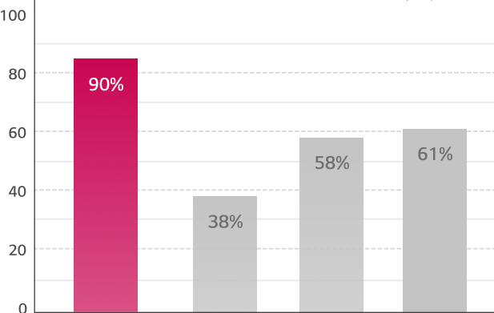
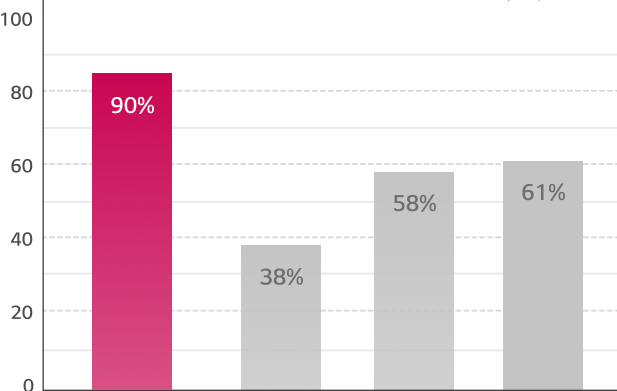

How To Dry Clean
Clothes Easily At Home.
Have you ever wished you could skip dry cleaning your clothes or bedding because it’s simply too much of a hassle? Or perhaps you wondered why dry cleaning is so important. Do “dry-clean” only clothes leave you mystified and slightly intimidated? Yeah, we’ve all been there. That’s why in this article we’ll break down what dry cleaning is and how it works. Best of all, we’ll walk you through the process of dry-cleaning clothes from the comfort of your home, taking the hassle and stress out of dry-cleaning clothes.

What is dry cleaning and how does it work?
Let’s start from the beginning, what is dry cleaning exactly? To start off, the term itself can be a bit misleading. Dry cleaning technically refers to any cleaning process in which a solvent other than water is used. Certain fabrics such as silk, cashmere, wool, leather, and many more can be damaged or prone to shrinkage when treated with water. That’s why dry cleaning is important to extend the lifespan of your favorite (and often expensive) clothing items. Commercial dry cleaners often use a chemical solvent such as perchloroethylene instead of water. This solvent acts as a ‘spotting agent’ to help penetrate fabrics and remove stains in a more concentrated way than a normal machine wash. However, chemical solvents like this can leave residue on clothes which may even lead to fabric damage over time. They are also often toxic and damaging to the environment, leading to increased focus on alternative methods of dry cleaning in recent years.

Home alternatives to dry cleaning
If you’re looking for a non-chemical alternative to dry-cleaning while also hoping to avoid the hassle of hand-washing, the LG Styler has you covered. Perfect for refreshing those delicate pieces without the use of harsh chemicals, this specialized clothing care device takes the mystery and uncertainty out of caring for your clothes. LG Styler makes the process of caring for delicate fabrics, from suits and school uniforms to wool jumpers and cashmere knitwear, quick and effortless.
Here’s how to use it:
1. First, it’s important to check the labels on your clothes to find the recommended washing method. This will usually provide you with more information about the fabric composition as well. As for the dreaded “dry clean only” pieces, worry not! The LG Styler has a cycle specifically made to care for delicate clothing items such as:
- Silks
- Wool and knitwear
- Leather
- Business suits
- Dress shirts and pants
- Cotton and down jackets
2. Place the clothing items you wish to refresh into the Styler.
3. Select your desired cycle from the 4 cycles displayed: refresh, special care, sanitize, and gentle dry. All cycles include a basic dust removal, steam, and drying function.
4. Styler cycles range from 20 minutes to over an hour depending on the cycle chosen. Once the selected cycle finishes, simply take your fresh, ready-to-wear clothes out of the Styler.
Reduction Rate (%)


- Styler Refresh -Normal
- Natural Dry 1.5h
- Natural Dry 4h
- Natural Dry 8h
Reduction Rate (%)
 

- Styler Refresh -Normal
- Natural Dry 1.5h
- Natural Dry 4h
- Natural Dry 8h
How does the LG Styler work?
It’s only natural to wonder: how does Styler work? The answer is actually quite simple! There are two key functions that help the Styler provide high-quality clothing care:
First, the Moving Hanger . Styler’s Moving Hanger works by gently shaking fine dust and other materials off of clothes.
- Second is Styler’s TrueSteam® technology. 100℃ TrueSteam ® technology sterilizes fabrics, removing 99.9% of germs and bacteria from clothes while also gently removing wrinkles. It also deodorizes clothes, removing any odours that have accumulated over the course of the day and ensuring your favourite pieces stay fresh.
What can the LG Styler do for me?
Now that we’re all familiar with what the Styler is and how it works, you may be left with one final question: how will the LG Styler fit into my daily life? Well, thanks to its hassle-free nature and quick cycle times, Styler comes in handy in a variety of situations. It’s especially useful for refreshing clothing efficiently and effectively, perfect for those looking for ways to streamline their busy lives by avoiding that weekly visit to the dry cleaners. Here are some of the main ways the LG Styler brings you innovation for a better life:
Don’t just take our word for it though, hear what Styler users have to say.
“My wife and I have many clothes that need to be dry cleaned,
but now we use Styler almost every other day to keep them fresh.”
“I found this product extremely useful for many things,
such as refreshing suits, jackets, dresses, blankets, pillows, stuffed animals and more.
It can even sanitize toys and anything else that can be safely steamed.”
So whether you’re looking to move away from professional dry cleaning, want an easy at-home solution, or simply want to take the best care of your most beloved clothing pieces, Styler may be the answer you’re looking for!